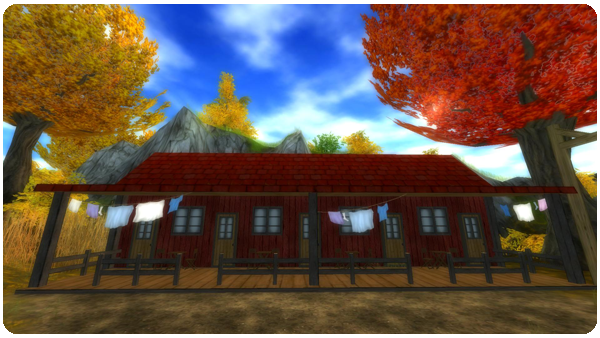

2012. július 11., szerda
Sziasztok!
Íme a heti frissítés újdonságai:
Új küldetések a 12. szintű játékosok számára:
Ha 12. szintű vagy, akkor valószínűleg a patkóid már elég kopottak. Lovagolj el a kovácshoz, Conrad Marsdeenhez Moorlandbe, és kérdezd meg, van-e valami ötlete.

Új funkciók:
- A múlt héten itt-ott építkezéseket láthattunk Jorvik környékén, és most már szállodák és hostelek is épültek.
Ha új napot szeretnél, például hogy folytathasd a küldetést, akkor csak be kell jelentkezned bármelyik hotelbe vagy szállodába, és ott aludnod! Amikor felkelsz, új nap lesz, és folytathatod a küldetést!
- A Valedale-tó és Mr. Andersson könnyebb megközelítése érdekében most már van egy lószállító pótkocsi a tónál.
Üdvözlettel:
a Star Stable csapata